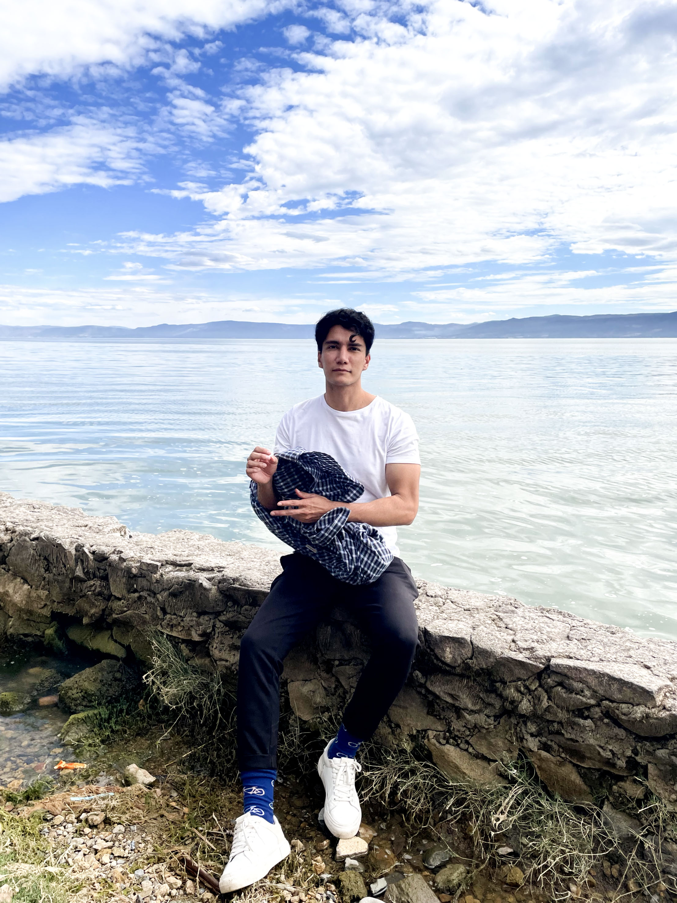

Where Data Meets Design
Professional Journey
Data Scientist | BIM Manager & Designer | Data Engineer
- Data with a purpose: I aim to make data intuitive and actionable.
- Building better systems: My thinking process: "If it works, how can it work smarter?"
- Design-first thinking: Iterating, testing, and refining until the solution is as elegant as it is functional.
Beyond the Resume
Design Enthusiast | Movement Lover | Constant Learner
Creating
- Sketching user interfaces on napkins
- Drawing thoughts as a diary
- Editing photos for fun
Moving
- Calisthenics (current goal: one-arm pull-up!)
- Boxing out stress
- Testing gym theories
Questioning
- "How could this be 10% more efficient?"
- "What if we visualized the data differently?"
- "Who does this help—and how can we help more?"

Hanging out in Ajijic, Jalisco!